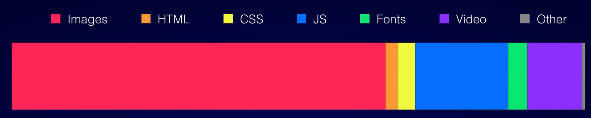

Lighthouse
Late house
Table of contents
- What is it❓
- Why❓
- How❓
- Audit References 📖
- What can I do? 🤓
- Lighthouse: Demo time 🎉
What is it?
"Auditing, performance metrics, and best practices"
Why❓
- non-technical audience
- performance is a team concern
- advices
- build by the best
- ...
Thanks 🙏
lagriculteur.frHow
- Chrome DevTools
- Chrome extension
- Node CLI
👉 Demo
Chrome Devtools: example.com

Chrome extension

Node CLI
npm i lighthouse -g
Audit References
Performance
Critical Request Chains
Defer unused CSS
👉 Coverage tabEnable Text Compression
- Use Brotli
- Use GZIP
Check the Content-Encoding header in the Response Headers section.
Enable Text Compression
First Contentful Paint 👨‍🎨
Browser renders the first bit of content from the DOM
First Meaningful Paint ğŸ¨
Primary content of the page is visible
🧐
First CPU Idle 📲
Measures when a page is minimally interactive
___🚚____🚚________🚛__🚚_________
Avoids Enormous Network Payloads
vendor.js😨/apipayloads (var_dump(mysql)- Images
JavaScript Bootup Time Is Too High
Only send the code that your users need.
Time to Interactive
😊__🕐__😕__🕑__😤__🕖__🤬
Has multiple page redirects
👉🌕👉🌖👉🌑👉🌓👉🌔👉🌕
Keep Server Response Times Low
Fails if the browser waits more than 600ms for the server to respond
Minify css
Offscreen Images
Optimize Images
Properly Size Images
Unoptimized Images
 httparchive.orgSpeed Index
Check how quickly the contents of a page are visibly populated
Render-Blocking Resources
55% ➡️ 77%
User Timing Marks and Measures
DemoUses inefficient cache policy on static assets
Uses An Excessive DOM Size
- less than 1500 nodes
- max depth of 32 nodes
- ...
Preload key requests
Before
After
👉 Network tab
What can I do?
- Prevent render blocking CSS
- HTTP Caching:
- Intersection observer
- Defer requests until they're needed
Code specific
- Compression
- Minification
- Tree shaking
- Code splitting
Code specific: Compression
Images
- Compression
- Optimize images